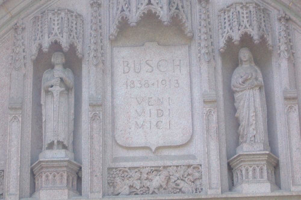
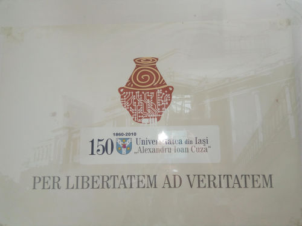
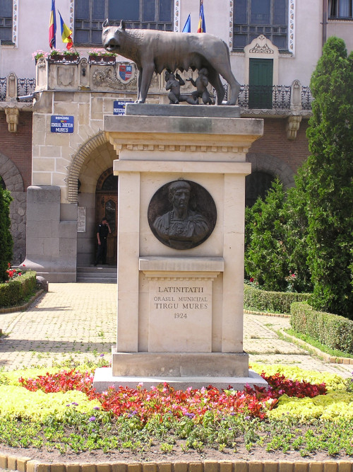

Sign advertising a local business: (Lettering is faint; look between red arrows) carpe noctem = seize the night
Adolphus Busch put a Latin quotation on his tomb: veni, vidi, vici = "I came, I saw, I conquered"
Which local university is this? religioni et bonis artibus = For religion and the good arts
Romania
canis flores tenens (dog holding flowers), seen in Cluj, Romania
Motto at the university in Iași, Romania: per libertatem ad veritatem = through freedom to the truth

Sign on lecture hall at the University of Iași, Romania: Aula Magna = The Large Hall
Restaurant name in Romania: Gaudeamus = Let's rejoice
Romulus and Remus being suckled by the she-wolf This statue is found in public spaces throughout Romania. The relief on the monument is the Emperor Trajan, who conquered the land that is now Romania.
